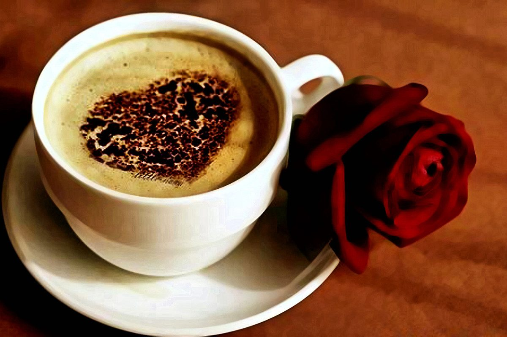

Types of coffee we have.
- Espresso
- Cappuccino
- Americano
- Cafe au Lait
- Mocha
The espresso, also known as a short black, is approximately 1 oz. of highly concentrated coffee. Although simple in appearance, it can be difficult to master. Ratio: 1 shot of espresso Cup: 2-4 oz. Espresso Cup
This creamy coffee drink is usually consumed at breakfast time in Italy and is loved . It is usually associated with indulgence and comfort because of its thick foam layer and additional flavorings that can be added to it. Ratio: 1-2 shots of espresso + 2 oz. of steamed milk + 2 oz. of foamed milk + sprinkling of chocolate powder (optional) Cup: 6-8 oz. Cappuccino Mug
Americanos are popular breakfast drinks and thought to have originated during World War II. Soldiers would add water to their coffee to extend their rations farther. The water dilutes the espresso while still maintaining a high level of caffeine. Ratio: 1 shot of espresso + 3 oz. of hot water Cup: 5-6 oz. Glass Coffee Mug
The cafe au lait is typically made with French press coffee instead of an espresso shot to bring out the different flavors in the coffee. It is then paired with scalded milk instead of steamed milk and poured at a 50/50 ratio. Ratio: 5 oz. French press coffee + 5 oz. scalded milk Cup: 12 oz. Coffee Mug
Mocha :Iced coffees become very popular in the summertime in the . The recipes do have some variance, with some locations choosing to interchange milk with water in the recipe. Often, different flavoring syrups will be added per the preference of the customer. Ratio: 2 oz. drip coffee or espresso + 4 oz. of ice + 4-6 oz of milk or water + flavoring syrup to taste Cup: 14 oz. Mixing Glass
About our coffee
Running to that fancy specialty store for the perfect coffee product seems like the most natural thing in the world, right? Well, not any more! You can buy all the best coffees and coffee related products online